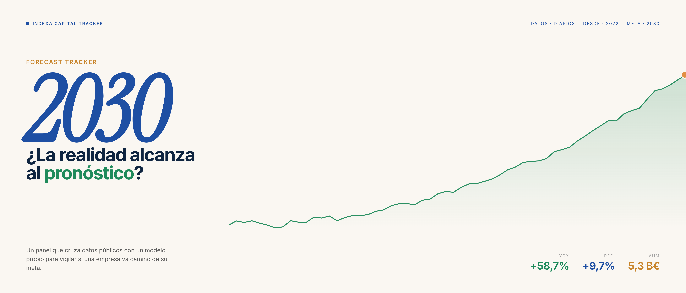
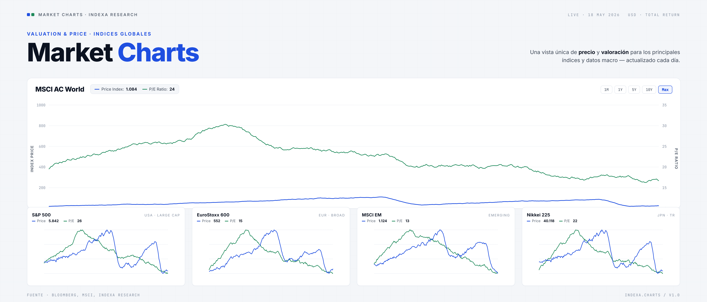
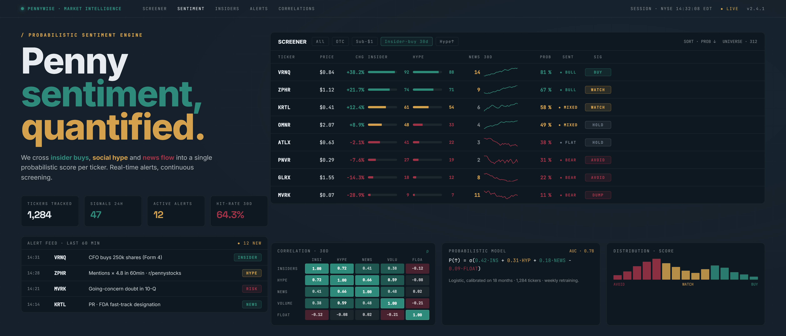
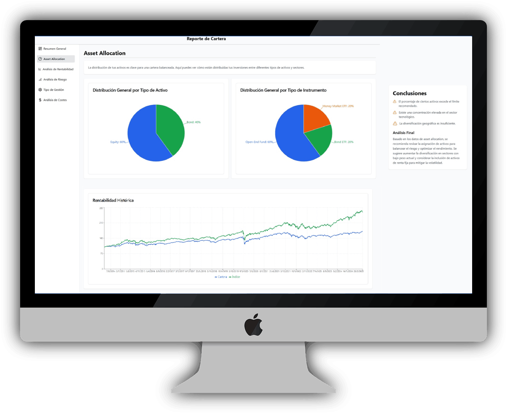

Indexa Capital: investment thesis
Independent tracker to understand Indexa Capital's growth: AUM, ARR, net inflows, seasonality, clients and scenarios linked to GVC Gaesco estimates and my own analysis.
Personal portfolio of financial products
I am turning investment research, market data and analytical models into concrete web applications: company tracking, market charts, sentiment intelligence, advisor discovery and portfolio analysis.

Independent tracker to understand Indexa Capital's growth: AUM, ARR, net inflows, seasonality, clients and scenarios linked to GVC Gaesco estimates and my own analysis.

Public website of market charts generated from a local data pipeline: valuations, expected returns, fixed income, macro indicators and future alerts.

Internal system to detect narrative shifts, hype, influential users, insider activity and price-linked signals in penny stocks. Before making it public, the focus is to improve the AI layer, test correlations and define the final product.

Financial advisor directory with demo login, search and portfolio analysis tooling. The priority is to validate the flow, improve the report and assess a low-cost Railway/Neon deployment.